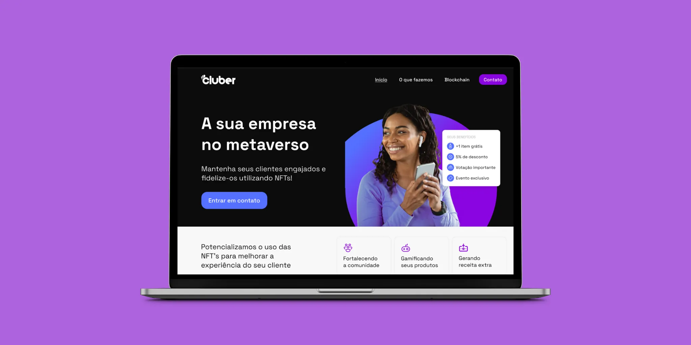
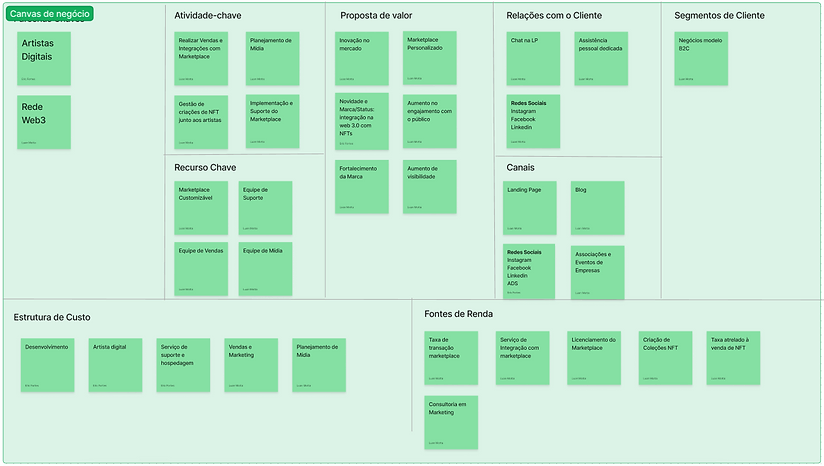
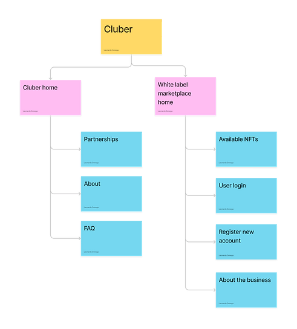
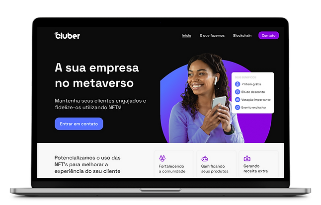
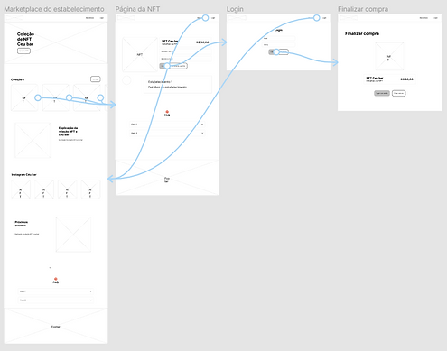
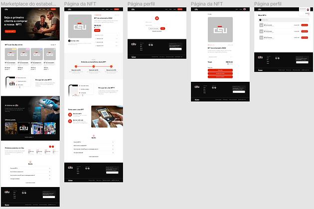
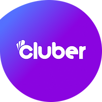
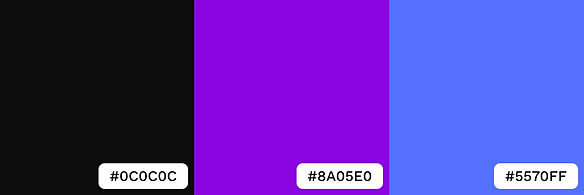

Cluber

Web3
Study case
Project
Cluber is a captivating case study project centered around a startup dedicated to building a vibrant community for bars and restaurants. Our innovative solution revolves around a white label marketplace utilizing blockchain technology to offer NFTs with enticing benefits to third-party clients, thereby fostering recurring visits.
Goals
- Conduct in-depth research to discover and understand the target personas of the business
- Design and develop white label webpages, focusing on creating a seamless buying flow for users
- Uphold and implement consistent brand guidelines and visual identity throughout the platform
Research insights
To identify and understand the personas, we conducted user interviews with individuals from diverse backgrounds. After collecting a total of 20 responses, the results confirmed our initial suspicions and were straightforward to interpret.
📊
Approximately 60% of the users prefer to visit bars and restaurants between 2 to 4 times each month, while 25% go more than four times per month.
📚
Only half of the users are familiar with the workings of blockchain, the true meaning of NFTs, and the benefits of owning a Non-Fungible Token.
🎁
Over 90% of the surveyed audience expressed their willingness to purchase an NFT in order to gain additional discounts and exclusive benefits at their favorite bars and restaurants.
Meet the target users
Based on the insights gathered from the user interviews, we were able to identify and define the personas that would be central to our project. These findings also provided valuable direction for the business aspect of the endeavor.
John
24 Lives with parents Tech Freelancer
John is an avid technology enthusiast who values staying informed about the latest advancements. As a ritual, he frequents the same bar almost every weekend to socialize with his friends. However, he finds that he ends up spending more money than he'd like during these outings.

Ana
35 Lives with partner Restaurant owner
Amanda is the owner of a restaurant and is constantly seeking ways to enhance her business and stand out from the competition. Lately, she has been facing challenges with the frequency of customers visiting her restaurant, leading to fluctuations in profits at the end of each month.
Business Model Canvas
With the personas in place, we proceeded to develop a business model canvas to establish a clear path for achieving the project's objectives. This initiative proved instrumental in revealing more detailed insights into how the business plan and revenue generation would function.

Sitemap
Taking into account that the two personas would have distinct interactions with the Club, we devised two approaches for the sitemap:
🔄
The primary users would use the white label marketplace to buy and use NFTs, allowing bars and restaurants to maintain direct relationships with them.
⛓️
Bar and restaurant owners would use our website to learn about the project and blockchain, tailored to their needs and interests.

Cluber landing page
We developed the Cluber webpage to attract new clients interested in having their own marketplace. On this page, we thoughtfully explained the key aspects of our service, as well as the underlying technology of blockchain and NFTs. Additionally, this webpage serves as a central hub for addressing frequently asked questions from the primary persona. We understand that some users may feel uncertain about the purchasing process within the marketplace, so we aimed to provide clear and concise answers to ease any potential confusion.

Wireframing
During the wireframing phase, we focused on designing a versatile marketplace webpage for all of Cluber's contractors, creating a simple flow for users to buy and use NFTs. Integrating blockchain technology posed a unique challenge due to its complexity, but our team was committed to delivering a seamless solution.

White label webpages
The goal was to create a versatile solution for multiple brand identities by designing white label webpages with fixed elements for consistent structure across brands. Based on this, we made specific design choices, including:
🎨
A simple color scheme was chosen with white as the main color and one primary and accent color from each contractor.
🖼️
Using consistent, customizable images across all contractor pages.
🖥️
Setting a unified typeface and visual style for UI components.

Branding and visual identity
Following a thorough analysis of competitors in the blockchain universe, we opted for a gradient of colors that symbolize community and technology, effectively conveying a sense of exploration and discovery to our users in Club. The selected color scheme encompasses shades of purple and blue, prominently featured across all branding graphics, webpages, social media, and documents. To complement our innovative and distinct approach while ensuring simplicity and readability, we chose the Space Grotesk typeface. This sans-serif font seamlessly blends with each contractor's branding, offering a modern, easy-to-read aesthetic.
📲
Incorporating primary colors that resonate with technology.
🔤
Opting for a sans-serif font to maintain a consistent tone.


Final Considerations
As an emerging technology, working with blockchain presented a significant challenge, compelling us to draw upon diverse backgrounds in user experience and development to navigate this novel landscape.